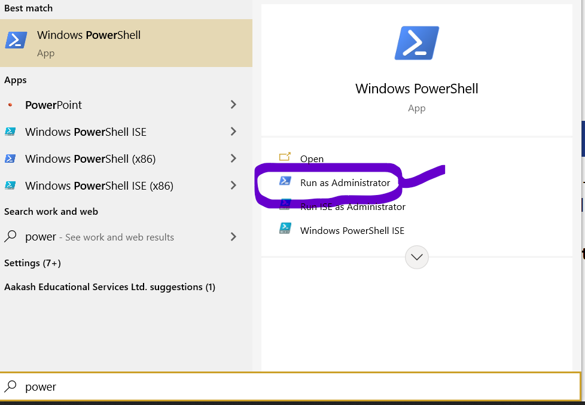
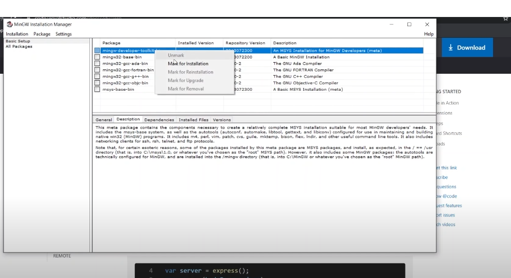
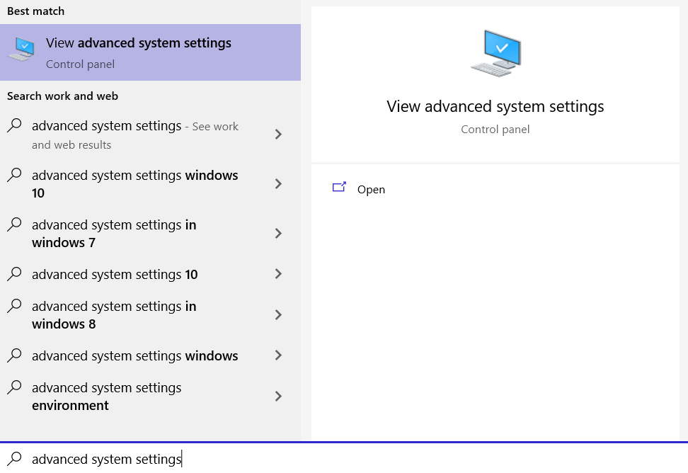
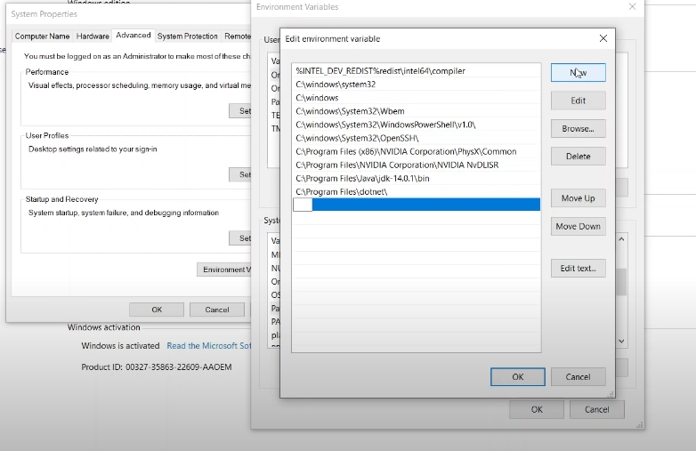
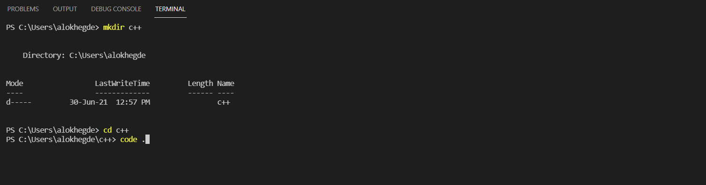

  <!DOCTYPE html>
  <html lang="en">
  <head>
    <meta charset="UTF-8">
    <meta http-equiv="X-UA-Compatible" content="IE=edge">
    <meta name="viewport" content="width=device-width, initial-scale=1.0">
    <title>C++ #1</title>
  </head>
  <body>
    
  </body>
  </html>
  <head>
    <link rel="stylesheet" href="styles.css">
  </head>

   <div class="relative min-h-screen flex">

    
    <div class="flex">
       <aside class="h-screen sticky top-0">
         <!--sidebar-->

      <div class="bg-blue-900 text-blue-100 w-60 space-y-6">

    <!-- codigo logo and sublogo c++ -->

      <div class=" text-2xl font-extrabold bg-red-400 max-w-sm mx-auto h-20 shadow-md space-x-4"><a href="index.html">Codigo</a>
      <div class="p-4 text-grey-500 font-semibold">Learning c++:</div>
      </div>


      <!--script for the copy paste button-->
       <script>
            document.getElementById('execCopy').addEventListener('click', execCopy);
              function execCopy() 
              {
                document.querySelector("#input").select();
                document.execCommand("copy");
              }
            </script>

    <!--navbar-->


    <nav class="bg-red-400 rounded-xl shadow-inner text-black-500 w-45 font-sans py-2">
     <a href="#c++intro" class="block py-2 5 px-5 font-extrabold ">What is C++ ?</a>
     <a href="#installing" class="block py-2 5 px-5 font-extrabold">Installing C++  :</a>
     <a href="#onwindows" class=" block py-2 px-7 ">-Windows</a>
     <a href="#onmac"     class="block py-2 px-7 ">-Mac</a>
     <a href="#onlinux" class="block py-2 px-7">-Linux</a>
     <a href="#helloworld" class="block py-2 px-5 font-extrabold">Your first program</a>
     <a href="#creatingIt" class=" block py-2  px-7">-Writing it!</a>
     <a href="#creatingIt" class=" block py-2  px-7">-Running it!</a>
     <a href="#helloworld" class="block py-2 5 px-5 font-extrabold text-blue-100">How it works</a>
     <a href="#addingtwonumbers" class="block py-2 5 px-5 font-extrabold">Adding two numbers</a>
     <a href="#multiplyingtwonumbers" class="block py-2 5 px-5 font-extrabold">Multiplying two numbers</a>
     <a href="#takinguserinput" class="block py-2 5 px-5 font-extrabold">⭐Taking User Input⭐</a>
    </nav>
    <span class="bg-red-400 p-14 rounded-3xl h-5 text-purple-600 rounded hover:bg-red-400 flex items-center space-x-6 space-y-5">
      Test yourself 
  <svg class="w-10 h-10 py-2"xmlns="http://www.w3.org/2000/svg" class="h-6 w-6" fill="none" viewBox="0 0 24 24" stroke="currentColor">
  <path stroke-linecap="round" stroke-linejoin="round" stroke-width="2" d="M14 5l7 7m0 0l-7 7m7-7H3" />
</svg>
</span>
</div>
</aside>
</div>
    
    <!--content-->


    <main>
    <div class="flex-1 p-14 text-xl font-sans">

      <!--what is c++-->

      <div class="c++intro font-bold px-3 bg-blue-900 p-2">
        What is C++?<br>
        </div>
        <div class="font-sans text-black-200 block p-2">
        <p>C++ is an <i><b>object-oriented-programming language</b></i> ,one of the first of its kind ,and it had a very huge impact in the <i>era</i> of the computer age.It is still used in making games ,desktop applications 
        and has several libraries which make it useful for competitive programming as well.</p>
        <br>
        <p>
          It was founded by <i><b>Bjarne Stroustrup</b></i> in the late 1980's
        </p>
        <p>
           
        </p>
      </div>
      <br>

      <!--installing-->


      <div class="installing font-bold p-2 bg-blue-900 flex items-center">
        Installing C++ :
        </div>
        <div class="font-sans text-black-200 block px-6 py-2">
          To get started with c++ , you have to install :
          <li>a Text Editor</li>
          <li>a compiler </li>
          <br>
          You can use all this separately or use an <b>IDE</b> <i>(Intgerated Development Environment)</i> which has all this pre-installed.
          The most popular ones are :<br><br><li>Visual-Studio Code</li>
           <li>CodeBlocks</li>  <li>Visual-Studio</li>
        </div>

        <br>
        <!--installing on windows-->
          <div class="onwindows font-bold px-2 py-2 bg-blue-900">
             On Windows:
          </div>
          
          <!--step 1-->
          <div class="font-sans text-black-200 mx-4  py-8   px-6 overflow-x-auto"> 
            <div class="font-extrabold text-2xl px-2 p-2 mt-4">STEP 1:</div>
            
              <input id="input" disabled value= "Set-ExecutionPolicy Bypass -Scope Process -Force; [System.Net.ServicePointManager]::SecurityProtocol = [System.Net.ServicePointManager]::SecurityProtocol -bor 3072; iex ((New-Object System.Net.WebClient).DownloadString('https://chocolatey.org/install.ps1'))" 
                          class="font-bold w-80 mx-auto rounded-md space-x-6 px-8 overflow-x-auto py-4 bg-blue-100" type="text"/>
                        <button id="execCopy" class="inline-block font-bold inline-block shadow-xl text-2xl rounded-3xl space-x-4 bg-grey-900">📋 </button>
                       
                      </div> 
                    <div class="font-sans text-black-200   px-6 mt-4 m-6">
                      Copy and paste the above lines in powershell .Do it as an <b>administrator</b> and press <b><i>Y</i></b> to confirm the installation 
                    </div>    
                     


        <!--step 2-->
        <div class="font-extrabold text-2xl px-3 p-2">STEP 2:</div>
          <div class="font-sans px-6">Now that we have installed choco , next step would be to install <b>Visual Studio Code</b>.It is a 
            very powerful text-editor by Microsoft .We will install it using choco itself . <i>Copy and Paste</i> the following in powershell as administrator : </div> 
          <div class="flex flex-wrap">
            <input id="input" disabled value= "choco install visualstudiocode" 
              class="font-bold w-80 mt-10  mx-48 rounded-md  px-2 p-4 overflow-x-auto bg-blue-100 " type="text"/>
            <button id="execCopy" class="inline-block font-bold inline-block shadow-xl text-2xl rounded-3xl mt-10 ">📋 </button>            

          </div>

        <!--step 3-->
        <div class="font-extrabold text-2xl px-3 py-4 p-2">STEP 3:</div>
          <div class="font-sans px-6">
            Next step is to install the c++ compiler - <b>mingw</b> and this can be done by clicking
            <a href="https://osdn.net/projects/mingw/downloads/68260/mingw-get-setup.exe/">
              <div class="inline-block  bg-blue-100 space-x-6 px-6"
              <b>this link</b></a> 
              </div>
              and installing it.  Tick <b>all</b> ✔️  of them by right clicking and select mark for installation wait for them to be installed .
               
          </div>

        <!--step 4-->
        <div class="font-extrabold text-2xl px-3 py-4 p-2">STEP 4:</div>
        <div class="font-sans px-6">
          Next step is to tell your computer that mingw is installed on your computer , you can do this by setting an <b>Environment Variable</b> .
           Go to Advanced System Settings and set a new Environment variable :
           <div class="flex flex-column space-x-2 px-6 py-6">
            
            
            </div>
            ➡️ Set the new Environment Variable as the location of the mingw bin file  which is usually 
            <div class="font-mono inline-block bg-blue-100 px-6 rounded-md">
              C:\MinGW\bin
            </div>
            Copy and paste this as the enviroment variable and click on <b>OK</b>
        </div>

        <!--step 5-->
        <div class="font-extrabold text-2xl px-3 py-6 p-2">STEP 5 :</div>
        <div class="font-sans px-6">
          Next step is to run your c++ program :
          open visual studio code and open a new terminal by clicking on terminal or by pressing 
          <div class="inline-block shadow-3xl bg-blue-100 mt-2  mx-2 px-4 font-mono">ctrl+shift+`</div> on your keyboard . Now type the following in the terminal:

         <div class="px-10 m-4 mx-10 rounded-md py-4 font-sans mx-4 px-6 bg-red-200">
          <div> 1. <b>mkdir + name of directory</b> : to create a directory (eg : mkdir c++)
          <div>2. <b>cd + name of directory</b> : {name of the directory you had created} (eg: cd c++)
          <div class="">3. <b>code .</b>  : {to open a vs code window with that file}</div>
          </div>
        </div>
        </div>
         
         <div class ="py-2 p-2 font-bold">
         Now all you have to do is start writing your c++ program ! and compile it by clicking on run without debugging or by typing 
         <div class="inline-block shadow-3xl bg-blue-100 mt-2  mx-2 px-4 font-mono">ctrl+f5</div>.
         </div>
   </div>

        <!--on Linux-->
        <div class="font-extrabold  bg-blue-900 p-4 px-4 mt-4   py-4">
            On Linux :
        </div>
        <div class="font-sans p-4 px-8">
          Installing c++ is pretty easy as most of it is done through the terminal.You can do this by first typing:<br>
          <div class="inline-block bg-blue-100 font-mono font-bold px-10 p-4 mt-4 py-4 rounded-md">
            sudo apt update && sudo apt upgrade -y
          </div>
         : This will update and upgrade the system
        </div>
        <div class="px-8 font-sans">
          Then type the following to install the build essentials and the c++ compiler - <b><i>g++</i></b> and c++ debugger - <b><i>gdb</i></b>
          <div class="inline-block bg-blue-100 font-bold px-10 p-6 mt-4 px-6 py-4 rounded-md font-mono">
            sudo apt install build-essential gdb g++
          </div>
          : This will install g++ and gdb and the build essentials
          <div class="px-3 py-6 ">
            Then type the following to install programs to download vscode on the terminal itself :
             <div class="inline-block bg-blue-100 font-bold px-10 p-6 mt-4 py-4 rounded-md font-mono">
               sudo apt install software-properties-common apt-transport-https wget
               </div>
                <div class="inline-block bg-blue-100 font-bold px-10 p-6 mt-4 py-4 rounded-md font-mono">
                wget -q https://packages.microsoft.com/keys/microsoft.asc -O- | sudo apt-key add -
                sudo add-apt-repository "deb [arch=amd64] https://packages.microsoft.com/repos/vscode stable main"
             </div>
              <div class="px-4 mt-4 py-4 font-sans">
             Then type the following to install visual studio code :
             </div>
             <div class="inline-block bg-blue-100 font-bold px-10 p-4 mt-4 px-2 mt-3 py-4 rounded-md font-mono">
               sudo apt install code 
             </div>
          </div>
        </div>
        <div class="px-8 m-4 py-4 font-sans">
          Type the following in the terminal to create a c++ folder on vs code :</div>
         <div class="px-10 m-4 mx-10 rounded-md py-4 font-sans mx-4 px-6 bg-red-200">
          <div> 1. <b>mkdir + name of directory</b> : to create a directory (eg : mkdir c++)
          <div>2. <b>cd + name of directory</b> : {name of the directory you had created} (eg: cd c++)
          <div class="">3. <b>code .</b>  : {to open a vs code window with that file}</div>
          </div>
        </div>
        </div>

        <!--your first program-->
        <div class="font-extrabold mt-4 bg-blue-900 p-5">
          Your first Program :
        </div>
        
        create a directory
        add extensions
        write a program 
        compile it 
        tada!
  </div>

  </main>
</html>
